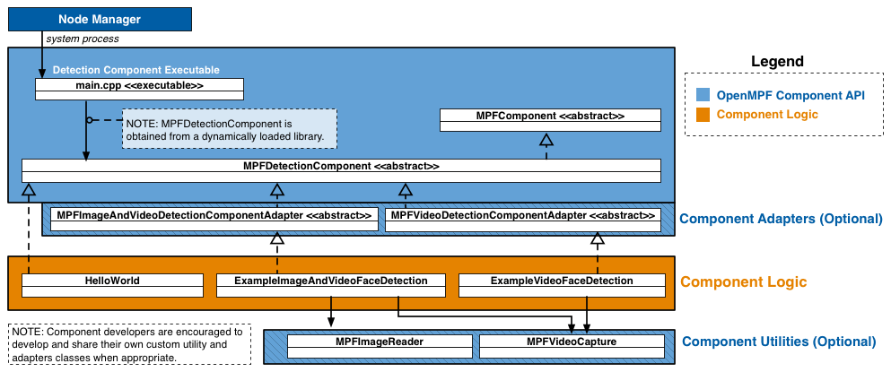

NOTICE: This software (or technical data) was produced for the U.S. Government under contract, and is subject to the Rights in Data-General Clause 52.227-14, Alt. IV (DEC 2007). Copyright 2017 The MITRE Corporation. All Rights Reserved.
C++ Component API Overview
In OpenMPF, a component is a plugin that receives jobs (containing media), processes that media, and returns results.
The OpenMPF Component API currently supports the development of detection components, which are used detect objects in image, video, or audio files.
Using this API, detection components can be built to provide:
- Detection (Localizing an object)
- Tracking (Localizing an object across multiple frames)
- Classification (Detecting the type of object and optionally localizing that object)
- Transcription (Detecting speech and transcribing it into text)
How Components Integrate into OpenMPF
Components are integrated into OpenMPF through the use of OpenMPF's Component Executable. Developers create component libraries that encapsulate the component detection logic. Each instance of the Component Executable loads one these libraries and uses it to service job requests sent by the OpenMPF Workflow Manager (WFM).
The Component Executable:
- Receives and parses job requests from the WFM
- Invokes functions on the component library to obtain detection results
- Populates and sends the respective responses to the WFM
The basic psuedocode for the Component Executable is as follows:
component->SetRunDirectory(...)
component->Init()
while (true) {
job = ReceiveJob()
if (component->Supports(job.data_type))
component->GetDetections(...) // Component logic does the work here
SendJobResponse()
}
component->Close()
Each instance of a Component Executable runs as a separate process.
The Component Executable receives and parses requests from the WFM, invokes functions on the Component Logic to get detection objects, and subsequently populates responses with the component output and sends them to the WFM.
A component developer implements a detection component by extending MPFDetectionComponent.
As an alternative to extending MPFDetectionComponent directly, a developer may extend one of several convenience adapter classes provided by OpenMPF. See Convenience Adapters for more information.
Getting Started
The quickest way to get started with the OpenMPF Component API is to first read the OpenMPF Component API Overview and then review the source for example OpenMPF C++ detection components.
Detection components are implemented by:
- Extending
MPFDetectionComponent. - Building the component into a shared object library. (See HelloWorldComponent CMakeLists.txt).
- Packaging the component into an OpenMPF-compliant .tar.gz file. (See Component Packaging).
- Registering the component with OpenMPF (see Packaging and Registering a Component).
OpenMPF API Specification
The figure below presents a high-level component diagram of the OpenMPF API.

The API consists of Component Interfaces, which provide interfaces and abstract classes for developing components; Job Definitions, which define the work to be performed by a component; Job Results, which define the results generated by the component; Component Adapters, which provide default implementations of several of the MPFDetectionComponent interface; and Component Utilities, which perform actions such as image rotation, and cropping.
Component Interface
MPFComponent- Abstract base class for components.
Detection Component Interface
MPFDetectionComponentextendsMPFComponent- Abstract class that should be extended by all OpenMPF detection components.
Job Definitions
The following data structures contain details about a specific job (work unit):
MPFImageJobextendsMPFJobMPFVideoJobextendsMPFJobMPFAudioJobextendsMPFJob
Job Results
The following classes define the results of a component's processing:
Components must also include two Component Factory Functions.
OpenMPF Component API
The MPFComponent class is the abstract base class utilized by all OpenMPF components.
IMPORTANT: This interface should not be directly implemented, because no mechanism exists for launching components based off of it. Currently, the only supported type of component is detection, and all components should instead extend
MPFDetectionComponent.
Init()
The component should perform all initialization operations in the Init member function.
Init will be called once by the OpenMPF Component Executable before any other member functions.
- Function Definition:
bool Init() - Parameters: none
- Returns: (bool) Return true if initialization is successful, otherwise return false.
- Example:
bool SampleComponent::Init() {
// Get component paths
string run_dir = GetRunDirectory();
string plugin_path = run_dir + "/SampleComponent";
string config_path = plugin_path + "/config";
// Setup logger, load data models, etc.
return true;
}
Close()
The component should perform all shutdown operations in the Close member function.
Close will be called once by the OpenMPF Component Executable prior to component shutdown.
This method is called before the component instance is deleted (see Component Factory Functions).
- Function Definition:
bool Close() - Parameters: none
- Returns: (bool) Return true if successful, otherwise return false.
- Example:
bool SampleComponent::Close() {
// Free memory, etc.
return true;
}
GetComponentType()
The GetComponentType() member function allows the OpenMPF Component API to determine the component "type." Currently MPF_DETECTION_COMPONENT is the only supported component type. APIs for other component types may be developed in the future.
- Function Definition:
MPFComponentType GetComponentType() - Parameters: none
- Returns: (MPFComponentType) Currently,
MPF_DETECTION_COMPONENTis the only supported return value. - Example:
MPFComponentType SampleComponent::GetComponentType() {
return MPF_DETECTION_COMPONENT;
};
GetRunDirectory()
Returns the value of the private run_directory data member which contains the full path of the parent folder above where the component is installed. This parent folder is also known as the plugin folder.
- Function Definition:
string GetRunDirectory() - Parameters: none
- Returns: (string) Full path of the parent folder above where the component is installed.
- Sample Usage:
string run_dir = GetRunDirectory();
string plugin_path = run_dir + "/SampleComponent";
string config_path = plugin_path + "/config";
string logconfig_file = config_path + "/Log4cxxConfig.xml";
SetRunDirectory(string)
Sets the value of the private run_directory data member which contains the full path of the parent folder above where the component is installed.
- Function Definition:
void SetRunDirectory(const string &run_dir) -
Parameters:
Parameter Data Type Description run_dir const string &Full path of the parent folder above where the component is installed. -
Returns: void
IMPORTANT:
SetRunDirectoryis called by the Component Executable to set the correct path. This function should not be called within your implementation.
Component Factory Functions
Every detection component must include the following macros in its implementation:
MPF_COMPONENT_CREATOR(TYPENAME);
MPF_COMPONENT_DELETER();
The creator macro takes the TYPENAME of the detection component (for example, “HelloWorldComponent”). This macro creates the factory function that the OpenMPF Component Executable will call in order to instantiate the detection component. The creation function is called once, to obtain an instance of the component, after the component library has been loaded into memory.
The deleter macro creates the factory function that the Component Executable will use to delete that instance of the detection component. These macros must be used outside of a class declaration, preferably at the bottom or top of a component header file.
Example:
// Note: Do not put the TypeName/Class Name in quotes
MPF_COMPONENT_CREATOR(ComponentNameHere);
MPF_COMPONENT_DELETER();
OpenMPF Detection Component API
The MPFDetectionComponent class is the abstract class utilized by all OpenMPF detection components. This class provides functions for developers to integrate detection logic into OpenMPF.
IMPORTANT: Each detection component must implement all of the
GetDetections()functions or extend from a superclass which provides implementations for them (see convenience adapters).If your component does not support a particular data type, it should simply:
return MPF_UNSUPPORTED_DATA_TYPE;
Convenience Adapters
As an alternative to extending MPFDetectionComponent directly, developers may extend one of several convenience adapter classes provided by OpenMPF.
These adapters provide default implementations of several methods in MPFDetectionComponent and ensure that the component's logic properly extends from the Component API. This enables developers to concentrate on implementation of the detection algorithm.
The following adapters are provided:
- Image Detection (source)
- Video Detection (source)
- Image and Video Detection (source)
- Audio Detection (source)
- Audio and Video Detection (source)
Example: Creating Adaptors to Perform Naive Tracking: A simple detector that operates on videos may simply go through the video frame-by-frame, extract each frame’s data, and perform detections on that data as though it were processing a new unrelated image each time. As each frame is processed, one or more
MPFImageLocationsare generated.Generally, it is preferred that a detection component that supports
VIDEOdata is able to perform tracking across video frames to appropriately correlateMPFImageLocationdetections across frames.An adapter could be developed to perform simple tracking. This would correlate
MPFImageLocationdetections across frames by naïvely looking for bounding box regions in each contiguous frame that overlap by a given threshold such as 50%.
Detection Component Interface
Supports(MPFDetectionDataType)
Returns true or false depending on the data type is supported or not.
- Function Definition:
bool Supports(MPFDetectionDataType data_type) -
Parameters:
Parameter Data Type Description data_type MPFDetectionDataTypeComponent should only return true for IMAGE, VIDEO, and/or AUDIO. -
Returns: (bool) True if the component supports the data type, otherwise false.
- Example:
// Sample component that supports only image and video files
bool SampleComponent::Supports(MPFDetectionDataType data_type) {
return data_type == MPFDetectionDataType::IMAGE || data_type == MPFDetectionDataType::VIDEO;
}
GetDetectionType()
Returns the type of object detected by the component.
- Function Definition:
string GetDetectionType() -
Parameters: None
-
Returns: (string) The type of object detected by the component. Should be in all CAPS. Examples include:
FACE,MOTION,PERSON,SPEECH,CLASS(for object classification), orTEXT. - Example:
string SampleComponent::GetDetectionType() {
return "FACE";
}
GetDetections(MPFImageJob …)
Used to detect objects in an image file. The MPFImageJob structure contains the data_uri specifying the location of the image file.
Currently, the data_uri is always a local file path. For example, "/opt/mpf/share/remote-media/test-file.jpg". This is because all media is copied to the OpenMPF server before the job is executed.
- Function Definition:
MPFDetectionError GetDetections(const MPFImageJob &job, vector<MPFImageLocation> &locations)
-
Parameters:
Parameter Data Type Description job const MPFImageJob &Structure containing details about the work to be performed. See MPFImageJoblocations vector<MPFImageLocation> &The MPFImageLocationdata for each detected object. -
Returns:
MPFDetectionError - Example:
MPFDetectionError SampleComponent::GetDetections(const MPFImageJob &job, vector<MPFImageLocation> &locations) {
// Parse job
// Generate image locations
return MPF_DETECTION_SUCCESS;
}
GetDetections(MPFVideoJob …)
Used to detect objects in a video file. Prior to being sent to the component, videos are split into logical "segments" of video data and each segment (containing a range of frames) is assigned to a different job. Components are not guaranteed to receive requests in any order. For example, the first request processed by a component might receive a request for frames 300-399 of a Video A, while the next request may cover frames 900-999 of a Video B.
- Function Definition:
MPFDetectionError getDetections(const MPFVideoJob &job, vector<MPFVideoTrack> tracks);
-
Parameters:
Parameter Data Type Description job const MPFVideoJob &Structure containing details about the work to be performed. See MPFVideoJobtracks vector<MPFVideoTrack> &The MPFVideoTrackdata for each detected object. -
Returns:
MPFDetectionError - Example:
MPFDetectionError SampleComponent::GetDetections(const MPFAudioJob &job, vector<MPFAudioTrack> &tracks) {
// Parse job
// Generate tracks
return MPF_DETECTION_SUCCESS;
}
GetDetections(MPFAudioJob …)
Used to detect objects in an audio file. Currently, audio files are not logically segmented, so a job will contain the entirety of the audio file.
- Function Definition:
MPFDetectionError GetDetections(const MPFAudioJob &job, vector<MPFAudioTrack> &tracks)
-
Parameters:
Parameter Data Type Description job const MPFAudioJob &Structure containing details about the work to be performed. See MPFAudioJobtracks vector<MPFAudioTrack> &The MPFAudioTrackdata for each detected object -
Returns:
MPFDetectionError - Example:
MPFDetectionError GetDetections(const MPFAudioJob &job, vector<MPFAudioTrack> &tracks) {
// Parse job
// Generate tracks
return MPF_DETECTION_SUCCESS;
}
Detection Job Data Structures
The MPFDetectionComponent data structures contain details about a specific job (work unit):
MPFImageJobextendsMPFJobMPFVideoJobextendsMPFJobMPFAudioJobextendsMPFJob
The following data structures contain details about detection results:
MPFJob
Structure containing information about about a job to be performed on a piece of media.
- Constructor(s):
MPFJob(
const string &job_name,
const string &data_uri,
const Properties &job_properties,
const Properties &media_properties)
-
Members:
Member Data Type Description job_name const string &A specific name given to the job by the OpenMPF framework. This value may be used, for example, for logging and debugging purposes. data_uri const string &The URI of the input media file to be processed. Currently, this is a file path. For example, "/opt/mpf/share/remote-media/test-file.avi". job_properties const Properties &Contains a map of <string, string>which represents the property name and the property value. The key corresponds to the property name specified in the component descriptor file described in Packaging and Registering a Component. Values are determined when creating a pipeline or when submitting a job.
Note: The job_properties map may not contain the full set of job properties. For properties not contained in the map, the component must use a default value.media_properties const Properties &Contains a map of <string, string>of metadata about the media associated with the job. The entries in the map vary depending on the type of media. Refer to the type-specific job structures below.
MPFImageJob
Extends MPFJob
Structure containing data used for detection of objects in an image file.
- Constructor(s):
MPFImageJob(
const string &job_name,
const string &data_uri,
const Properties &job_properties,
const Properties &media_properties)
-
Members:
Member Data Type Description job_name const string &See MPFJob.job_name for description. data_uri const string &See MPFJob.data_uri for description. job_properties const Properties &See MPFJob.job_properties for description. media_properties const Properties &See MPFJob.media_properties for description.
This may include the following key-value pairs:ROTATION: 0, 90, 180, or 270 degreesHORIZONTAL_FLIP: true if the image is mirrored across the Y-axis, otherwise falseEXIF_ORIENTATION: the standard EXIF orientation tag; a value between 1 and 8
MPFVideoJob
Extends MPFJob
Structure containing data used for detection of objects in a video file.
- Constructor(s):
MPFVideoJob(
const string &job_name,
const string &data_uri,
int start_frame,
int stop_frame,
const Properties &job_properties,
const Properties &media_properties)
-
Members:
Member Data Type Description job_name const string &See MPFJob.job_name for description. data_uri const string &See MPFJob.data_uri for description. start_frame const intThe first frame number (0-based index) of the video that should be processed to look for detections. stop_frame const intThe last frame number (0-based index) of the video that should be processed to look for detections. job_properties const Properties &See MPFJob.job_properties for description. media_properties const Properties &See MPFJob.media_properties for description.
Includes the following key-value pairs:DURATION: length of video in millisecondsFPS: frames per second (averaged for variable frame rate video)
IMPORTANT: For frame intervals greater than 1, the component must look for detections starting with the first frame, and then skip frames as specified by the frame interval, until or before it reaches the stop frame. For example, given a start frame of 0, a stop frame of 99, and a frame interval of 2, then the detection component must look for objects in frames numbered 0, 2, 4, 6, ..., 98.
MPFAudioJob
Extends MPFJob
Structure containing data used for detection of objects in an audio file. Currently, audio files are not logically segmented, so a job will contain the entirety of the audio file.
- Constructor(s):
MPFAudioJob(
const string &job_name,
const string &data_uri,
int start_time,
int stop_time,
const Properties &job_properties,
const Properties &media_properties)
-
Members:
Member Data Type Description job_name const string &See MPFJob.job_name for description. data_uri const string &See MPFJob.data_uri for description. start_time const intThe time (0-based index, in milliseconds) associated with the beginning of the segment of the audio file that should be processed to look for detections. stop_time const intThe time (0-based index, in milliseconds) associated with the end of the segment of the audio file that should be processed to look for detections. job_properties const Properties &See MPFJob.job_properties for description. media_properties const Properties &See MPFJob.media_properties for description.
Includes the following key-value pair:DURATION: length of audio file in milliseconds
Detection Job Result Classes
MPFImageLocation
Structure used to store the location of detected objects in a image file.
- Constructor(s):
MPFImageLocation()
MPFImageLocation(
int x_left_upper,
int y_left_upper,
int width,
int height,
float confidence = -1,
const Properties &detection_properties = {})
-
Members:
Member Data Type Description x_left_upper intUpper left X coordinate of the detected object. y_left_upper intUpper left Y coordinate of the detected object. width intThe width of the detected object. If the detection consists of the entire image, use 0. height intThe height of the detected object. If the detection consists of the entire image, use 0. confidence floatRepresents the "quality" of the detection. The range depends on the detection algorithm. 0.0 is lowest quality. Higher values are higher quality. Using a standard range of [0.0 - 1.0] is advised. If the component is unable to supply a confidence value, it should return -1.0. detection_properties Properties &Optional additional information about the detected object. There is no restriction on the keys or the number of entries that can be added to the detection_properties map. For best practice, keys should be in all CAPS.
EXAMPLE - Using detection_properties: A component that performs generic object classification could add an entry to the detection_properties which corresponds to the type of object detected.
Source:
MPFImageLocation detection;
detection.x_left_upper = 0;
detection.y_left_upper = 0;
detection.width = 0;
detection.height = 0;
detection.confidence = probability;
detection.detection_properties["CLASSIFICATION"] = "backpack";
MPFVideoTrack
Structure used to store the location of detected objects in a video file.
- Constructor:
MPFVideoTrack()
MPFVideoTrack(
int start_frame,
int stop_frame,
float confidence = -1,
map<int, MPFImageLocation> frame_locations,
const Properties &detection_properties = {})
-
Members:
Member Data Type Description start_frame intThe first frame number (0-based index) that contained the detected object. stop_frame intThe last frame number (0-based index) that contained the detected object. frame_locations map<int, MPFImageLocation>A map of individual detections. The key for each map entry is the frame number where the detection was generated, and the value is a MPFImageLocationcalculated as if that frame was a still image. Note that a key-value pair is not required for every frame between the track start frame and track stop frame.confidence floatRepresents the "quality" of the detection. The range depends on the detection algorithm. 0.0 is lowest quality. Higher values are higher quality. Using a standard range of [0.0 - 1.0] is advised. If the component is unable to supply a confidence value, it should return -1.0. detection_properties Properties &Optional additional information about the detected object. There is no restriction on the keys or the number of entries that can be added to the detection_properties map. For best practice, keys should be in all CAPS.
EXAMPLE - Using detection_properties: A component that detects text could add an entry to the detection_properties map where the key is
TRANSCRIPTIONand the value is a string representing the text found in the video segment.c++ MPFImageLocation detection; detection.x_left_upper = 10; detection.y_left_upper = 40; detection.width = 500; detection.height = 600; detection.detection_properties["TRANSCRIPTION"] = "RE5ULTS FR0M A TEXT DETECTER";
MPFAudioTrack
Structure used to store the location of detected objects in an audio file.
- Constructor(s):
MPFAudioTrack()
MPFAudioTrack(
int start_time,
int stop_time,
float confidence = -1,
const Properties &detection_properties = {})
-
Members:
Member Data Type Description start_time intThe time (0-based index, in ms) when the audio detection event started. stop_time intThe time (0-based index, in ms) when the audio detection event stopped. confidence floatRepresents the "quality" of the detection. The range depends on the detection algorithm. 0.0 is lowest quality. Higher values are higher quality. Using a standard range of [0.0 - 1.0] is advised. If the component is unable to supply a confidence value, it should return -1.0. detection_properties Properties &Optional additional information about the detection. There is no restriction on the keys or the number of entries that can be added to the detection_properties map. For best practice, keys should be in all CAPS.
Enumeration Types
MPFDetectionError
Enum used to indicate the status of a GetDetections call. A component is not required to support all error types.
| ENUM | Description |
|---|---|
| MPF_DETECTION_SUCCESS | The execution of any component function has completed normally with no errors. |
| MPF_OTHER_DETECTION_ERROR_TYPE | The component function has failed for a reason that is not captured by any of the other error codes. |
| MPF_DETECTION_NOT_INITIALIZED | The initialization of the component, or the initialization of any of its dependencies, has failed for any reason. |
| MPF_UNRECOGNIZED_DATA_TYPE | The media data type received by a component is not one of the values contained in the MPFDetectionDataType enum. Note that this failure is normally caught by the component executable, before a job is passed to the component logic. |
| MPF_UNSUPPORTED_DATA_TYPE | The job passed to a component requests processing of a job of an unsupported type. For instance, a component that is only capable of processing audio files should return this error code if a video or image job request is received. |
| MPF_INVALID_DATAFILE_URI | The string containing the URI location of the input data file is invalid or empty. |
| MPF_COULD_NOT_OPEN_DATAFILE | The data file to be processed could not be opened for any reason, such as a permissions failure, or an unreachable URI. |
| MPF_COULD_NOT_READ_DATAFILE | There is a failure reading data from a successfully opened input data file. |
| MPF_FILE_WRITE_ERROR | The component received a failure for any reason when attempting to write to a file. |
| MPF_IMAGE_READ_ERROR | The component failed to read the image provided by the URI. For example, it might indicate the failure of a call to MPFImageReader::GetImage(), or cv::imread(). |
| MPF_BAD_FRAME_SIZE | The frame data retrieved has an incorrect or invalid frame size. For example, if a call to cv::imread() returns a frame of data with either the number of rows or columns less than or equal to 0. |
| MPF_BOUNDING_BOX_SIZE_ERROR | The calculation of a detection location bounding box has failed. For example, a component may be using an external library to detect objects, but the bounding box returned by that library lies partially outside the frame boundaries. |
| MPF_INVALID_FRAME_INTERVAL | An invalid or unsupported frame interval was received. |
| MPF_INVALID_START_FRAME | The component received an invalid start frame number. For example, if the start frame is less than zero, or greater than the stop frame, this error code should be used. |
| MPF_INVALID_STOP_FRAME | The component receives an invalid stop frame number. For example, if the stop frame is less than the start frame, or greater than the number of the last frame in a video segment, this error code should be used. |
| MPF_DETECTION_FAILED | General failure of a detection algorithm. This does not indicate a lack of detections found in the media, but rather a break down in the algorithm that makes it impossible to continue to try to detect objects. |
| MPF_DETECTION_TRACKING_FAILED | General failure of a tracking algorithm. This does not indicate a lack of tracks generated for the media, but rather a break down in the algorithm that makes it impossible to continue to try to track objects. |
| MPF_INVALID_PROPERTY | The component received a property that is unrecognized or has an invalid/out-of-bounds value. |
| MPF_MISSING_PROPERTY | The component received a job that is missing a required property. |
| MPF_JOB_PROPERTY_IS_NOT_INT | A job property is supposed to be an integer type, but it is of some other type, such as a boolean or a floating point value. |
| MPF_JOB_PROPERTY_IS_NOT_FLOAT | A job property is supposed to be a floating point type, but it is of some other type, such as a boolean value. |
| MPF_INVALID_ROTATION | The component received a job that requests rotation of the media, but the rotation value given is not in the set of acceptable values. If the component is using the MPF::COMPONENT::FrameRotator class, the set of acceptable values is {0, 90, 180, 270}. |
| MPF_MEMORY_ALLOCATION_FAILED | The component failed to allocate memory for any reason. |
Utility Classes
For convenience, the OpenMPF provides the MPFImageReader (source) and MPFVideoCapture (source) utility classes to perform horizontal flipping, rotation, and cropping to a region of interest. Note, that when using these classes, the component will also need to utilize the class to perform a reverse transform to convert the transformed pixel coordinates back to the original (e.g. pre-flipped, pre-rotated, and pre-cropped) coordinate space.
C++ Component Build Environment
A C++ component library must be built for the same C++ compiler and Linux version that is used by the OpenMPF Component Executable. This is to ensure compatibility between the executable and the library functions at the Application Binary Interface (ABI) level. At this writing, the OpenMPF runs on CentOS 7.2-1511 (kernel version 3.10.0-327), and the OpenMPF C++ component executable is built with g++ (GCC) 4.8.5 20150623 (Red Hat 4.8.5-4).
Components should be supplied as a tar file, which includes not only the component library, but any other libraries or files needed for execution. This includes all other non-standard libraries used by the component (aside from the standard Linux and C++ libraries), and any configuration or data files.
Component Development Best Practices
Single-threaded Operation
Implementations are encouraged to operate in single-threaded mode. OpenMPF will parallelize components through multiple instantiations of the component, each running as a separate service.
Stateless Behavior
OpenMPF components should be stateless in operation and give identical output for a provided input (i.e. when processing the same MPFJob).
Component Packaging
It is recommended that C++ components are organized according to the following directory structure:
componentName
├── config - Logging and other component-specific configuration
├── descriptor
│ └── descriptor.json
└── lib
└──libComponentName.so - Compiled component library
Once built, components should be packaged into a .tar.gz containing the contents of the directory shown above.
Logging
It is recommended to use Apache log4cxx for OpenMPF Component logging.
Note that multiple instances of the same component can log to the same file. Also, logging content can span multiple lines.
Log files should be output to:
${MPF_LOG_PATH}/${THIS_MPF_NODE}/log/<componentName>.log
Each log statement must take the form:
DATE TIME LEVEL CONTENT
The following log LEVELs are supported:
FATAL, ERROR, WARN, INFO, DEBUG, TRACE.
For example:
2016-02-09 13:42:42,341 INFO - Starting sample-component: [ OK ]
The following configuration can be used to match the format of other OpenMPF logs:
<log4j:configuration xmlns:log4j="http://jakarta.apache.org/log4j/">
<!-- Output the log message to log file-->
<appender name="SAMPLECOMPONENT-FILE" class="org.apache.log4j.DailyRollingFileAppender">
<param name="file" value="${MPF_LOG_PATH}/${THIS_MPF_NODE}/log/<componentName>.log" />
<param name="DatePattern" value="'.'yyyy-MM-dd" />
<layout class="org.apache.log4j.PatternLayout">
<param name="ConversionPattern" value="%d %p [%t] %c{36}:%L - %m%n" />
</layout>
</appender>
<logger name= "SampleComponent" additivity="false">
<level value="INFO"/>
<appender-ref ref="SAMPLECOMPONENT-FILE"/>
</logger>
</log4j:configuration>